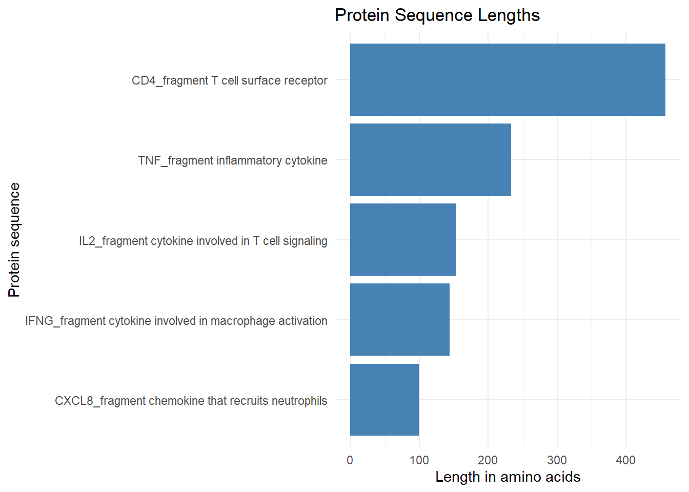
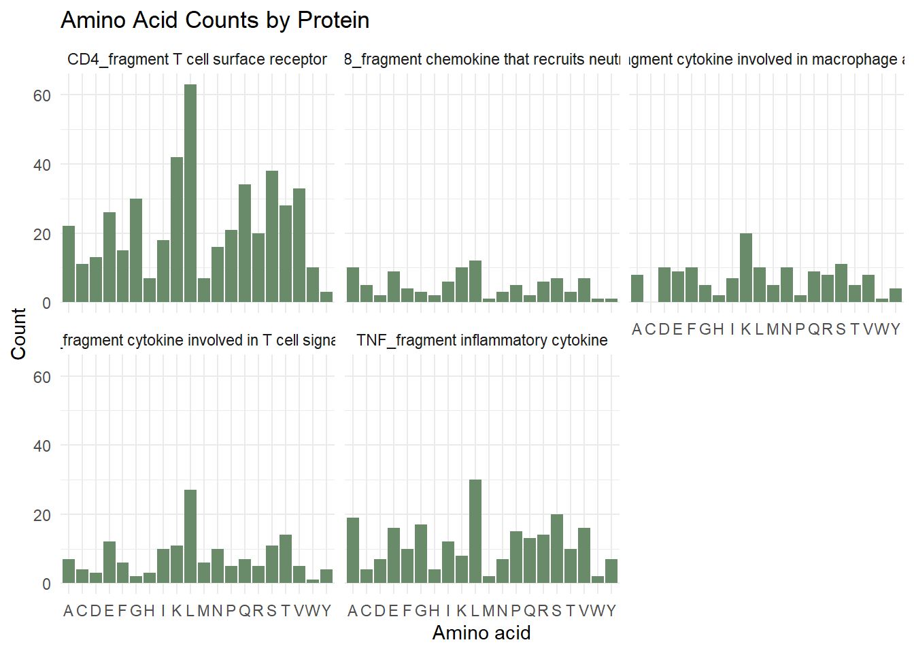
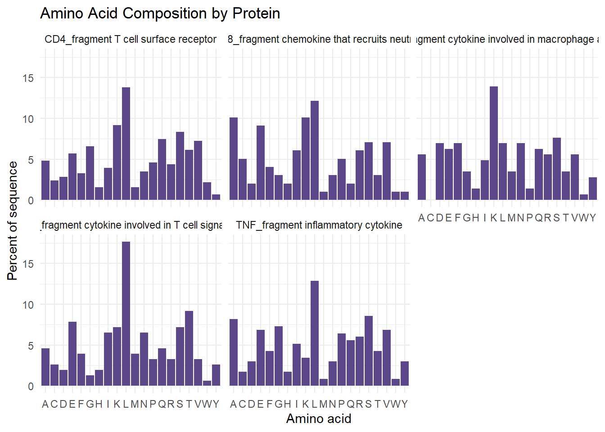
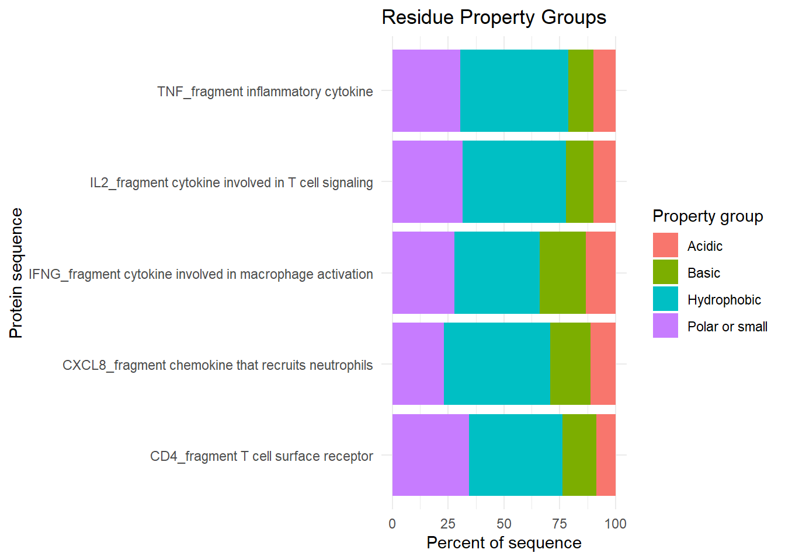

# Biostrings is a Bioconductor package for reading and working with biological
# sequences. We use it here because protein FASTA files are complex data, not
# ordinary rectangular spreadsheets.
# If Biostrings is not installed yet, run these lines once in the Console:
# install.packages("BiocManager")
# BiocManager::install("Biostrings")
library(Biostrings)
library(dplyr)
library(tidyr)
library(ggplot2)Complex Data Type Exercise: Immune Protein Sequences
A beginner-friendly Biostrings analysis of FASTA protein data
Goal
In this exercise, we will work with protein sequences stored in FASTA format. FASTA files are common in biology because they can store one or many DNA, RNA, or protein sequences in a simple text format.
We will use the Biostrings package to:
- read immune-related protein sequences from a FASTA file
- calculate the length of each protein sequence
- count amino acids in each sequence
- group amino acids by simple chemical property categories
- make exploratory plots
This is a practice analysis. The FASTA file below contains a small set of immune-related protein sequence fragments so the code can run without downloading external data.
Load Packages
Create a Small Practice FASTA File
# In a real project, this path would point to a FASTA file downloaded from a
# database such as UniProt or NCBI.
#
# For this exercise, we create a small FASTA file ourselves. This makes the
# exercise reproducible because everyone starts with the same input file.
fasta_file <- "immune_protein_fragments.fasta"
# The lines that start with ">" are FASTA headers. Each header gives a name for
# the sequence that follows it.
#
# The other lines contain amino acid letters. For example:
# A = alanine, C = cysteine, D = aspartic acid, and so on.
practice_fasta <- c(
">IL2_fragment cytokine involved in T cell signaling",
"MYRMQLLSCIALSLALVTNSAPTSSSTKKTQLQLEHLLLDLQMILNGINNYKNPKLTRMLTFKFYMPKKATELKHLQCLEEELKPLEEVLNLAQSKNFHLRPRDLISNINVIVLELKGSETTFMCEYADETATIVEFLNRWITFCQSIISTLT",
">IFNG_fragment cytokine involved in macrophage activation",
"MQDPYVKEAENLKKYFNAGHSDVADNGTLFLGILKNWKEESDRKIMQSQIVSFYFKLFKNFKDDQSIQKSVETIKEDMNVKFFNSNKKKRDDFEKLTNYSVTDLNVQRKAIHELIQVMAELSPAAKTGKRKRSQMLFRGRRASQ",
">TNF_fragment inflammatory cytokine",
"MSTESMIRDVELAEEALPKKTGGPQGSRRCLFLSLFSFLIVAGATTLFCLLHFGVIGPQREEFPRDLSLISPLAQAVRSSSRTPSDKPVAHVVANPQAEGQLQWLNRRANALLANGVELRDNQLVVPSEGLYLIYSQVLFKGQGCPSTHVLLTHTISRIAVSYQTKVNLLSAIKSPCQRETPEGAEAKPWYEPIYLGGVFQLEKGDRLSAEINRPDYLDFAESGQVYFGIIAL",
">CD4_fragment T cell surface receptor",
"MNRGVPFRHLLLVLQLALLPAATQGKKVVLGKKGDTVELTCTASQKKSIQFHWKNSNQIKILGNQGSFLTKGPSKLNDRADSRRSLWDQGNFPLIIRLKIEDSDTYICEVEDQKEEVQLLVFGLTANSDTHLLQGQSLTLTLESPPGSSPSVQCRSPRGKNIQGGKTLSVSQLELQDSGTWTCTVLQNQKKVEFKIDIVVLAFQKASSIVYKKEGEQVEFSFPLAFTVEKLTGSGELWWQAERASSSKSWITFDLKNKEVSVKRVTQDPKLQMGKKLPLHLTLPQALPQYAGSGNLTLALEAKTGKLHQEVNLVVMRATQLQKNLTCEVWGPTSPKLMLSLKLENKEAKVSKREKAVWVLNPEAGMWQCLLSDSGQVLLESNIKVLPTWSTPVQPMALIVLGGVAGLLLFIGLGIFFCVRCRHRRRQAERMSQIKRLLSEKKTCQCPHRFQKTCSPI",
">CXCL8_fragment chemokine that recruits neutrophils",
"MTSKLAVALLAAFLISAALCEGAVLPRSAKELRCQCIKTYSKPFHPKFIKELRVIESGPHCANTEIIVKLSDGRELCLDPKENWVQRVVEKFLKRAENS"
)
# Only write the file if it does not already exist. This avoids overwriting a
# file if you later replace it with your own sequences.
if (!file.exists(fasta_file)) {
writeLines(practice_fasta, fasta_file)
}Read the FASTA File with Biostrings
# readAAStringSet() reads amino acid sequences from a FASTA file.
# The result is an AAStringSet object, which is a Biostrings object designed for
# protein sequences.
immune_proteins <- readAAStringSet(fasta_file)
# Print the object so we can see how many sequences were read and their names.
immune_proteinsAAStringSet object of length 5:
width seq names
[1] 153 MYRMQLLSCIALSLALVTNSAPT...TATIVEFLNRWITFCQSIISTLT IL2_fragment cyto...
[2] 144 MQDPYVKEAENLKKYFNAGHSDV...SPAAKTGKRKRSQMLFRGRRASQ IFNG_fragment cyt...
[3] 233 MSTESMIRDVELAEEALPKKTGG...EINRPDYLDFAESGQVYFGIIAL TNF_fragment infl...
[4] 457 MNRGVPFRHLLLVLQLALLPAAT...KRLLSEKKTCQCPHRFQKTCSPI CD4_fragment T ce...
[5] 99 MTSKLAVALLAAFLISAALCEGA...CLDPKENWVQRVVEKFLKRAENS CXCL8_fragment ch...Calculate Protein Sequence Lengths
# width() gives the number of amino acids in each protein sequence.
protein_lengths <- tibble(
protein = names(immune_proteins),
length_aa = width(immune_proteins)
)
protein_lengths# A tibble: 5 × 2
protein length_aa
<chr> <int>
1 IL2_fragment cytokine involved in T cell signaling 153
2 IFNG_fragment cytokine involved in macrophage activation 144
3 TNF_fragment inflammatory cytokine 233
4 CD4_fragment T cell surface receptor 457
5 CXCL8_fragment chemokine that recruits neutrophils 99# A simple bar plot helps us compare sequence lengths.
ggplot(protein_lengths, aes(x = reorder(protein, length_aa), y = length_aa)) +
geom_col(fill = "steelblue") +
coord_flip() +
labs(
title = "Protein Sequence Lengths",
x = "Protein sequence",
y = "Length in amino acids"
) +
theme_minimal()
Count Amino Acids
# The standard protein alphabet has 20 common amino acid letters.
amino_acids <- c(
"A", "R", "N", "D", "C",
"Q", "E", "G", "H", "I",
"L", "K", "M", "F", "P",
"S", "T", "W", "Y", "V"
)
# alphabetFrequency() counts the letters in each sequence.
# baseOnly = TRUE keeps the output focused on standard amino acid letters.
aa_counts_matrix <- alphabetFrequency(
immune_proteins,
baseOnly = TRUE
)
# Convert the matrix to a data frame because data frames are easier to plot.
aa_counts <- as.data.frame(aa_counts_matrix) |>
select(all_of(amino_acids)) |>
mutate(protein = names(immune_proteins)) |>
relocate(protein)
aa_counts protein A R N D C Q E
1 IL2_fragment cytokine involved in T cell signaling 7 5 10 3 4 7 12
2 IFNG_fragment cytokine involved in macrophage activation 8 8 10 10 0 9 9
3 TNF_fragment inflammatory cytokine 19 14 7 7 4 13 16
4 CD4_fragment T cell surface receptor 22 20 16 13 11 34 26
5 CXCL8_fragment chemokine that recruits neutrophils 10 6 3 2 5 2 9
G H I L K M F P S T W Y V
1 2 3 10 27 11 6 6 5 11 14 1 4 5
2 5 2 7 10 20 5 10 2 11 5 1 4 8
3 17 4 12 30 8 2 10 15 20 10 2 7 16
4 30 7 18 63 42 7 15 21 38 28 10 3 33
5 3 2 6 12 10 1 4 5 7 3 1 1 7# Change from wide format to long format.
# Long format is usually easier for ggplot because one row represents one
# protein and one amino acid.
aa_counts_long <- aa_counts |>
pivot_longer(
cols = all_of(amino_acids),
names_to = "amino_acid",
values_to = "count"
)
aa_counts_long# A tibble: 100 × 3
protein amino_acid count
<chr> <chr> <int>
1 IL2_fragment cytokine involved in T cell signaling A 7
2 IL2_fragment cytokine involved in T cell signaling R 5
3 IL2_fragment cytokine involved in T cell signaling N 10
4 IL2_fragment cytokine involved in T cell signaling D 3
5 IL2_fragment cytokine involved in T cell signaling C 4
6 IL2_fragment cytokine involved in T cell signaling Q 7
7 IL2_fragment cytokine involved in T cell signaling E 12
8 IL2_fragment cytokine involved in T cell signaling G 2
9 IL2_fragment cytokine involved in T cell signaling H 3
10 IL2_fragment cytokine involved in T cell signaling I 10
# ℹ 90 more rows# Plot amino acid counts for each protein.
ggplot(aa_counts_long, aes(x = amino_acid, y = count)) +
geom_col(fill = "darkseagreen4") +
facet_wrap(~ protein) +
labs(
title = "Amino Acid Counts by Protein",
x = "Amino acid",
y = "Count"
) +
theme_minimal()
Calculate Amino Acid Percentages
# Raw counts are useful, but longer proteins naturally have larger counts.
# Percentages make sequences of different lengths easier to compare.
aa_percent_long <- aa_counts_long |>
left_join(protein_lengths, by = "protein") |>
mutate(percent = 100 * count / length_aa)
aa_percent_long# A tibble: 100 × 5
protein amino_acid count length_aa percent
<chr> <chr> <int> <int> <dbl>
1 IL2_fragment cytokine involved in T cell … A 7 153 4.58
2 IL2_fragment cytokine involved in T cell … R 5 153 3.27
3 IL2_fragment cytokine involved in T cell … N 10 153 6.54
4 IL2_fragment cytokine involved in T cell … D 3 153 1.96
5 IL2_fragment cytokine involved in T cell … C 4 153 2.61
6 IL2_fragment cytokine involved in T cell … Q 7 153 4.58
7 IL2_fragment cytokine involved in T cell … E 12 153 7.84
8 IL2_fragment cytokine involved in T cell … G 2 153 1.31
9 IL2_fragment cytokine involved in T cell … H 3 153 1.96
10 IL2_fragment cytokine involved in T cell … I 10 153 6.54
# ℹ 90 more rows# This plot shows the percent of each amino acid in each sequence.
ggplot(aa_percent_long, aes(x = amino_acid, y = percent)) +
geom_col(fill = "mediumpurple4") +
facet_wrap(~ protein) +
labs(
title = "Amino Acid Composition by Protein",
x = "Amino acid",
y = "Percent of sequence"
) +
theme_minimal()
Group Amino Acids by Simple Properties
# Amino acids can be grouped in many different ways.
# Here we use a simple beginner-friendly grouping.
#
# This grouping is only a broad summary. It is useful for exploration, but it
# does not replace detailed biochemical analysis.
aa_properties <- tibble(
amino_acid = amino_acids,
property_group = case_when(
amino_acid %in% c("D", "E") ~ "Acidic",
amino_acid %in% c("R", "H", "K") ~ "Basic",
amino_acid %in% c("A", "V", "I", "L", "M", "F", "W", "Y", "P") ~ "Hydrophobic",
amino_acid %in% c("S", "T", "N", "Q", "C", "G") ~ "Polar or small",
TRUE ~ "Other"
)
)
aa_properties# A tibble: 20 × 2
amino_acid property_group
<chr> <chr>
1 A Hydrophobic
2 R Basic
3 N Polar or small
4 D Acidic
5 C Polar or small
6 Q Polar or small
7 E Acidic
8 G Polar or small
9 H Basic
10 I Hydrophobic
11 L Hydrophobic
12 K Basic
13 M Hydrophobic
14 F Hydrophobic
15 P Hydrophobic
16 S Polar or small
17 T Polar or small
18 W Hydrophobic
19 Y Hydrophobic
20 V Hydrophobic # Join the property labels to the amino acid count table.
# Then add up counts within each protein and property group.
property_counts <- aa_counts_long |>
left_join(aa_properties, by = "amino_acid") |>
group_by(protein, property_group) |>
summarise(
count = sum(count),
.groups = "drop"
) |>
left_join(protein_lengths, by = "protein") |>
mutate(percent = 100 * count / length_aa)
property_counts# A tibble: 20 × 5
protein property_group count length_aa percent
<chr> <chr> <int> <int> <dbl>
1 CD4_fragment T cell surface receptor Acidic 39 457 8.53
2 CD4_fragment T cell surface receptor Basic 69 457 15.1
3 CD4_fragment T cell surface receptor Hydrophobic 192 457 42.0
4 CD4_fragment T cell surface receptor Polar or small 157 457 34.4
5 CXCL8_fragment chemokine that recruit… Acidic 11 99 11.1
6 CXCL8_fragment chemokine that recruit… Basic 18 99 18.2
7 CXCL8_fragment chemokine that recruit… Hydrophobic 47 99 47.5
8 CXCL8_fragment chemokine that recruit… Polar or small 23 99 23.2
9 IFNG_fragment cytokine involved in ma… Acidic 19 144 13.2
10 IFNG_fragment cytokine involved in ma… Basic 30 144 20.8
11 IFNG_fragment cytokine involved in ma… Hydrophobic 55 144 38.2
12 IFNG_fragment cytokine involved in ma… Polar or small 40 144 27.8
13 IL2_fragment cytokine involved in T c… Acidic 15 153 9.80
14 IL2_fragment cytokine involved in T c… Basic 19 153 12.4
15 IL2_fragment cytokine involved in T c… Hydrophobic 71 153 46.4
16 IL2_fragment cytokine involved in T c… Polar or small 48 153 31.4
17 TNF_fragment inflammatory cytokine Acidic 23 233 9.87
18 TNF_fragment inflammatory cytokine Basic 26 233 11.2
19 TNF_fragment inflammatory cytokine Hydrophobic 113 233 48.5
20 TNF_fragment inflammatory cytokine Polar or small 71 233 30.5 # A stacked bar plot gives a quick comparison of broad residue properties.
ggplot(property_counts, aes(x = protein, y = percent, fill = property_group)) +
geom_col() +
coord_flip() +
labs(
title = "Residue Property Groups",
x = "Protein sequence",
y = "Percent of sequence",
fill = "Property group"
) +
theme_minimal()
Simple Questions to Consider
- Which protein sequence is longest in this small example?
- Which amino acids are most common across the proteins?
- Do any proteins have a higher percentage of basic residues?
- Do any proteins have a higher percentage of hydrophobic residues?
- How might the results change if we used full-length reference sequences instead of short practice sequences?
What This Exercise Shows
This analysis treats protein sequences as a complex data type. Unlike a CSV file, a FASTA file is not already arranged as rows and columns. Biostrings helps us read the sequences correctly, and then we can convert selected results such as lengths and amino acid counts into tidy tables for plotting.